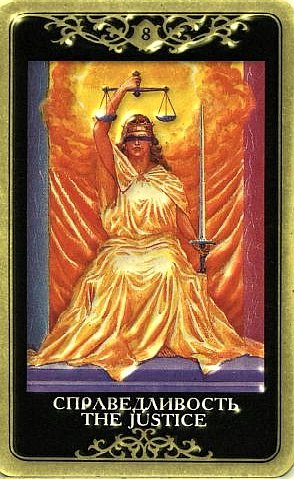

Пришла пора ответить за свои действия.
Наши мысли и поступки как бы пропускаются сквозь особую призму на предмет правильности.
Карта может быть и очень хорошей, и очень дискомфортной.

Когда выпадает Справедливость, мы можем быть уверены, что получим по заслугам – вопрос только, каковы эти заслуги. Это тот случай, когда есть шанс понять, что же ты посеял – по тому, что пожинаешь.
По Справедливости мы получаем ОЦЕНКУ нашей деятельности и поведения, а ситуации могут выглядеть по-разному (что-то могут подсказать окружающие карты) – экзамены, собеседования, визит к специалисту (врачу, научному руководителю и т.п.), просто разговор с умным человеком о какой-то ситуации, наконец, попытка самому себя оценить, подвести итоги и разобраться, кто виноват и что делать.
По Справедливости мы и САМИ ОЦЕНИВАЕМ какие-то ситуации, и появление этого Аркана может подчеркивать, что сейчас мы принимаем решение, которое будет иметь далеко идущие последствия.
Ее появление в раскладе – это также совет подумать, насколько глубоко затронула нас эта ситуация и способны ли мы видеть в ней что-то, кроме собственной правды.
Если эта карта становится сигнификатором вопрошающего, то это – знак его правоты и точного видения ситуации.
Энергия этой карты приносит в жизнь проницательность и ясность, трезвое восприятие ситуации, рассудительность, тонкую интуицию и чувство ответственности.
Поскольку мало кто может с чистой совестью назвать все это своими сильными сторонами, Справедливость несет нам также столкновение с последствиями пренебрежения этими вещами.
Это строгая карта, и если мы не безупречно чисты, то ее появление более настораживает, нежели радует.
Другое дело, если мы уверены в своей правоте и в том, что все сделали должным образом, а с нами обошлись нечестно. Тогда Справедливость обещает благоприятный исход для потерпевшего, триумф действительно правой и достойной стороны (и раздачу по заслугам всем недостойным сторонам).
Иногда эта карта в раскладе просто акцентирует страх воздаяния.
Справедливость реагирует своим появлением на те ситуации, в которых мы договариваемся о чем-то с другими людьми, заключаем союзы, договора, контракты, ведем переговоры и взаиморасчеты.
Справедливость чутко откликается на какие-то спорные дела – тяжбы, дележ наследства, разводы, возмещения ущерба, проблемы авторских прав и т.п., вообще предвещает правовую деятельность, которая каким-либо образом коснется вопрошающего.
Это «судебный процесс» (который вовсе не обязательно происходит именно в суде, с тем же успехом он может иметь место на кухне в студенческом общежитии).
В ситуации, описываемой раскладом, исход будет абсолютно справедлив.
Справедливость символизирует победу права в целом. Как результирующая карта расклада, она несет справедливость исхода, благоприятного или нет, для человека, которого это касается.
В качестве «причины» указывает на наличие объективных причин, на то, что мы получаем по заслугам.
Высший дар Справедливости – обретение равновесия между разными сферами жизни вообще, и в отношениях в частности.
Есть мнение, что карты по обе стороны от Справедливости в раскладе показывают факторы, которые следует уравновесить или между которыми приходится делать выбор (подобно Влюбленнным).
Справедливость представляет такие жизненные явления как законы, нормативные акты, полиция, юридические документы.
ЛИЧНЫЕ ОТНОШЕНИЯ
Опять же – честная игра.
Уравновешенность, искренность, взаимное уважение и соблюдение интересов.
Объективность, непредвзятость и беспристрастность Справедливости не располагают к любовным нежностям – скорее к заключению брачных контрактов и соблюдению разумных правил.
В зависимости от соседних карт она действительно может предполагать брак, легализацию существующей связи, узаконивание отношений.
Безусловный плюс Справедливости – это честность и порядочность, превозмогающие эгоизм (впрочем, второй участник связи быстро обнаружит, что его собственному эгоизму тоже не оставлено места для маневров).
Любить человека, описываемого Арканом Справедливость, очень нелегко.
Это большой труд (и большой дар).
Рыцарски честный и очень порядочный человек.
Частенько кажется слишком сдержанным, но на его благородство можно положиться.
Всю полноту ответственности он привык брать на себя.
Он может глубоко ранить – но только беспристрастностью, объективностью и этой жесткой личной порядочностью.
Его честь существует на самом деле.
Его нельзя умаслить, уговорить, соблазнить – часто это оказывается очень неприятным открытием для того, кто его возжелал, так как никакие испытанные приемы не действуют.
Им невозможно манипулировать, поскольку он без всякого труда видит все насквозь.
Если рядом еще и Сила – ни обойти, ни объехать, он все равно сделает только то, что считает нужным, и не сделает ничего, чего нужным не считает.
Если не считает нужным – ничего не будет, и в голову доведенной до отчаяния второй стороны начинают закрадываться мысли: похитить, изнасиловать, подробно объяснить, почему он(а) сам(а) виноват(а), и уж потом пристрелить
Человек Справедливости не теряет головы и не боится оценивать отношения критически.
Он не станет выискивать недостатки и достойному партнеру полностью воздаст должное, но запылить ему глаза парой эффектных жестов не получится.
Он не позволит себе чересчур увлекаться и делать слишком поспешные выводы.
Это идеал нравственной силы, аристократ духа. Его присутствие налагает нелегкую обязанность оставаться приличным человеком, держащим себя в руках. Иногда он кажется совершенно невыносимым.
В минуту бунта собственных слабостей ему ставят в упрек отсутствие таковых, крича, что он не человек (не женщина, не землялин...), и что чувство долга заменяет ему все остальные.
Его реакция мало чем отличается от реакции верховного судьи - он прекращает заседание, не считая возможным продолжать на таких вибрациях. При этом намерения его праведны, действует он из лучших побуждений и при продолжении заседания не припомнит приключившуюся истерику.
Благородство – это его способ проявлять сердечность.
Эта карта также символизирует равновесие между мужским и женским подходом к реальности, баланс между твердостью и мягкостью.